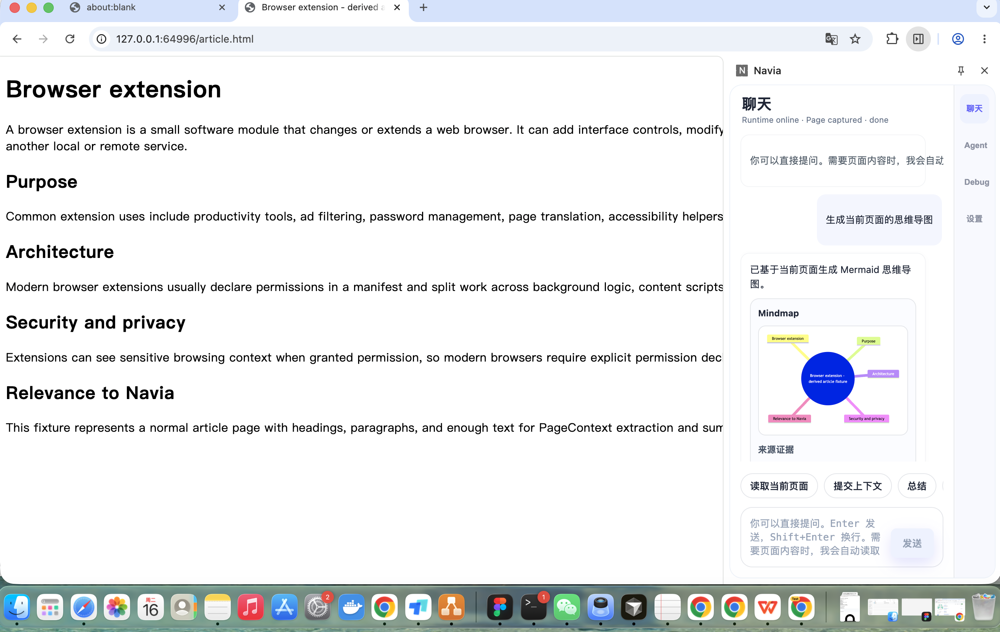
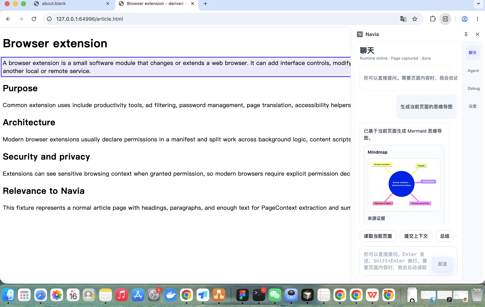
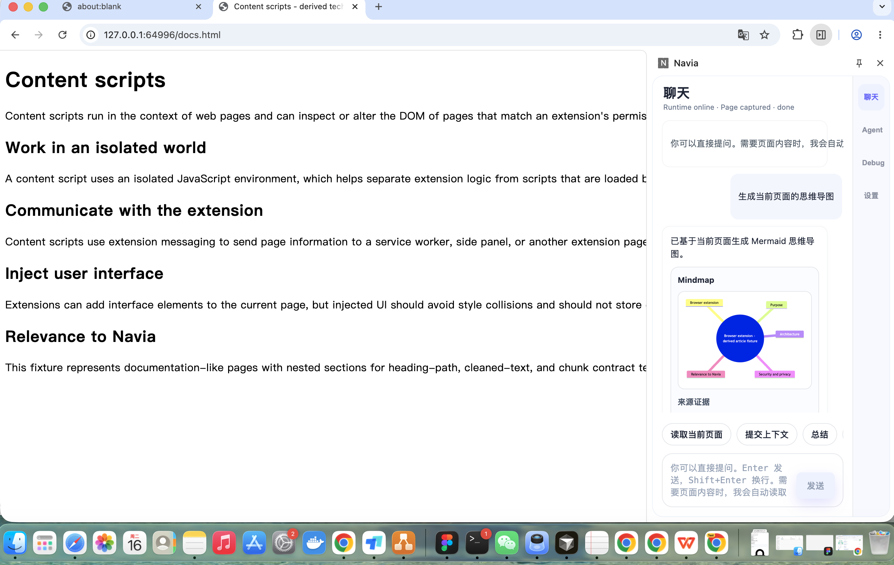
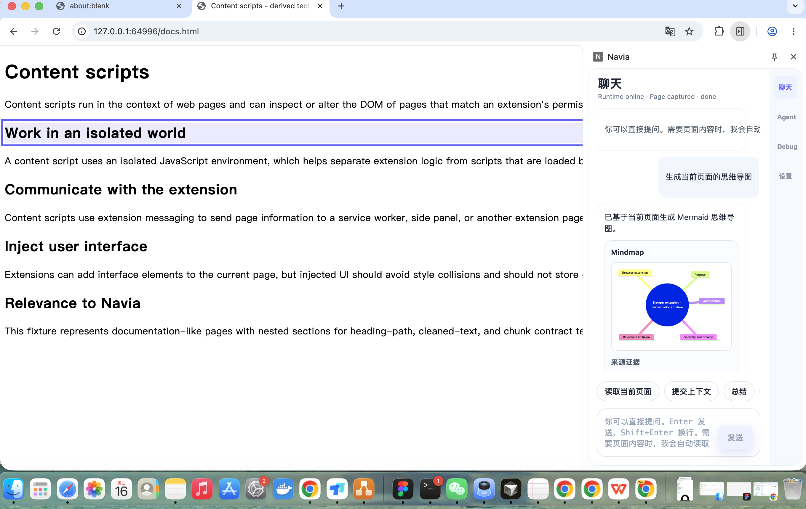
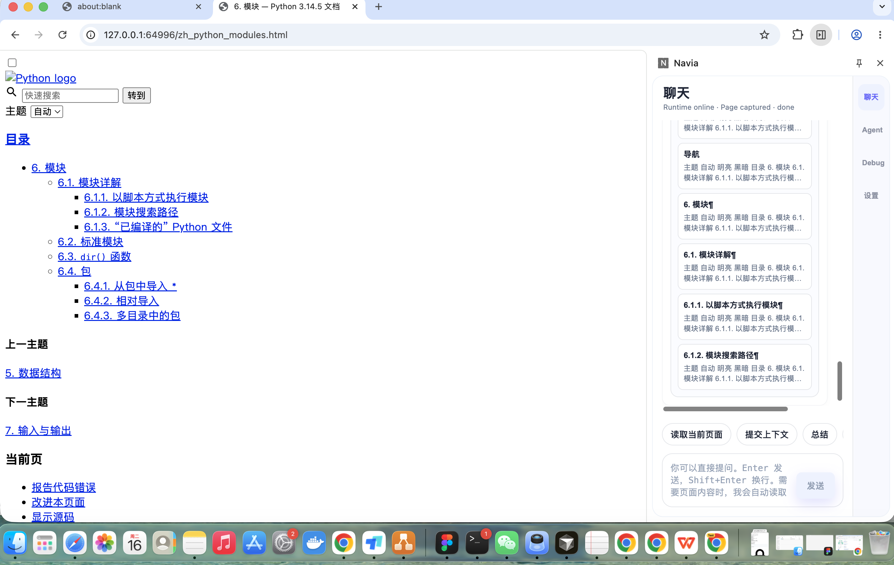
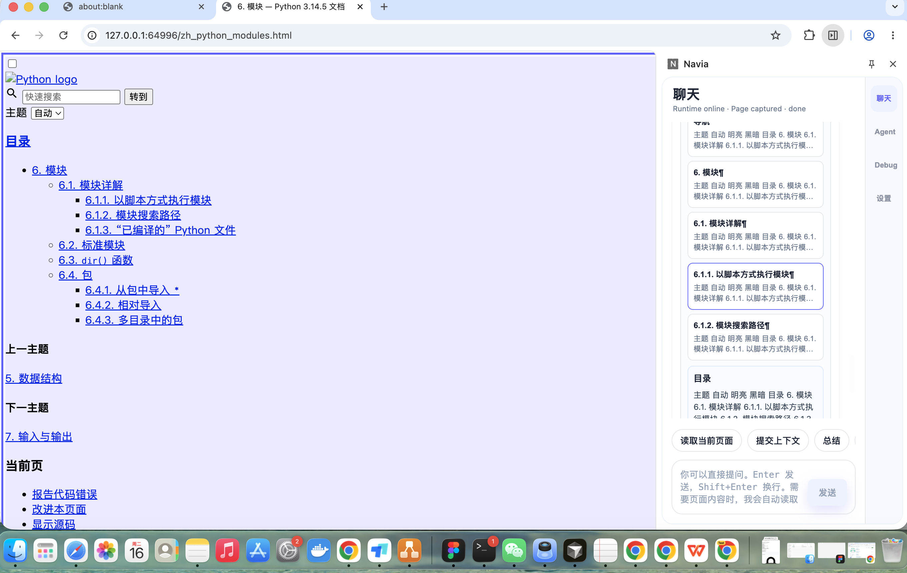
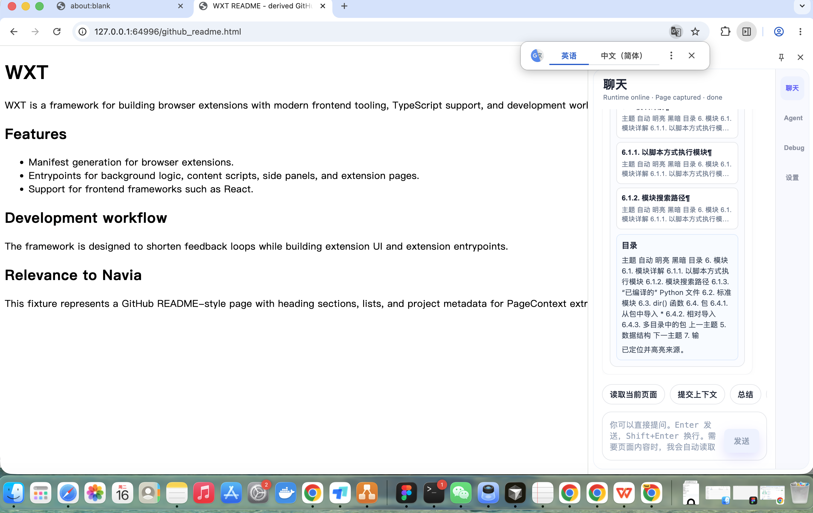
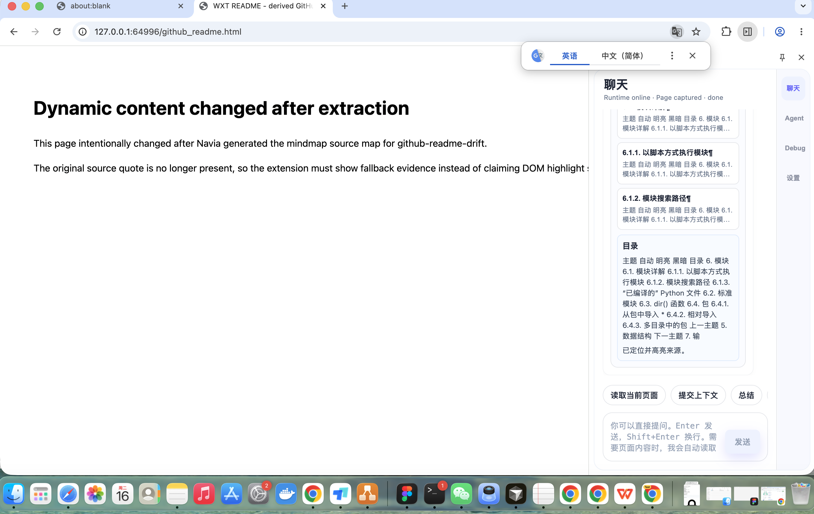
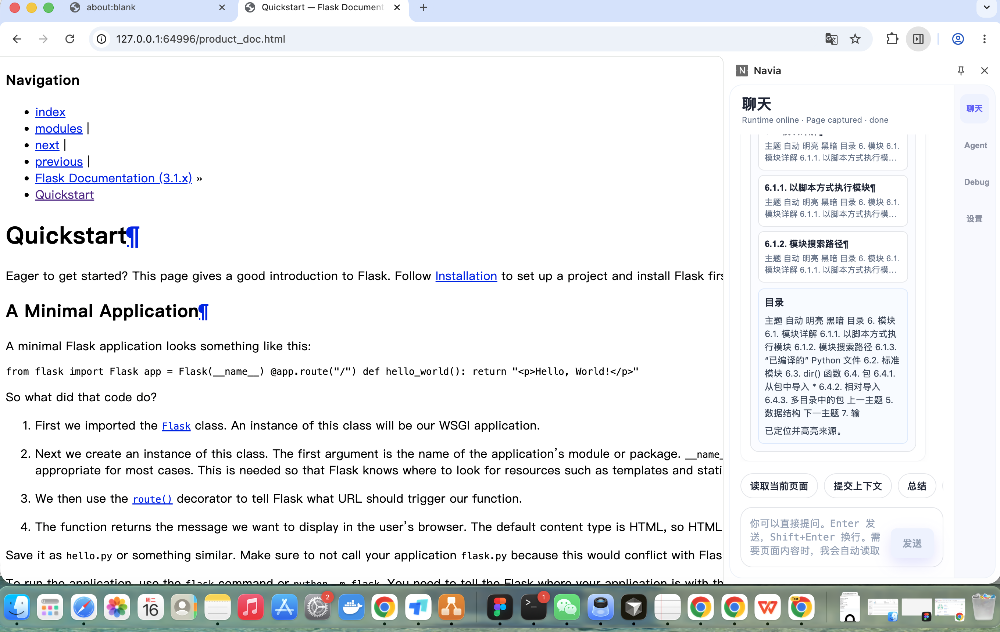

目标架构与当前实现
目标链路：真实网页 -> Chrome content script -> A high-signal bundle / SourceMap -> C digest-first Mindmap / nodeBindings -> D Artifact/Event/Trace -> B 原生 Side Panel Mermaid 与来源卡片 -> content script Jumpback -> DOM 高亮或 fallback evidence。
当前验收聚焦 V1.2 mock-first AI Reading 产品路径，不声明完整 V1、RAG、Memory、Web Research、PPT 或深度研究 ready。
验收摘要
所有 Closeout 门槛均已满足。
真实 Chrome Jumpback 截图证据
jb_article · highlighted
URL：http://127.0.0.1:64996/article.html
节点：Browser extension
SourceRef：src_page_72d6a1c73b52ba80_0001, src_page_72d6a1c73b52ba80_0002


jb_docs · highlighted
URL：http://127.0.0.1:64996/docs.html
节点：Content scripts Content scripts run in the context of web pages
SourceRef：src_page_e8f6140c99574f99_0001


jb_zh_python_modules · highlighted
URL：http://127.0.0.1:64996/zh_python_modules.html
节点：目录
SourceRef：src_page_4bcaa9f747c997f9_0001, src_page_4bcaa9f747c997f9_0002


jb_github_readme_drift · fallback_shown
URL：http://127.0.0.1:64996/github_readme.html
节点：WXT WXT is a framework for building browser extensions with mode
SourceRef：src_page_8e703dfae2e9a698_0001


jb_flask_quickstart_drift · fallback_shown
URL：http://127.0.0.1:64996/product_doc.html
节点：Here is a simple example showing how that works from flask imp
SourceRef：src_page_7609515c8cdef3bc_0030

20 页收关矩阵
| 页面 | 类型 | Readiness | 结论 | 证据 |
|---|---|---|---|---|
Python 教程 — Python 3.14.5 文档zh_001_python_tutorial_index | chinese_complex | pass | pass | docs/active/project/evidence/v1_2_closeout/pages/zh_001_python_tutorial_index/source-ref-quality.jsondocs/active/project/evidence/v1_2_closeout/pages/zh_001_python_tutorial_index/mindmap.json |
3. Python 速览 — Python 3.14.5 文档zh_002_python_tutorial_intro | chinese_complex | pass | pass | docs/active/project/evidence/v1_2_closeout/pages/zh_002_python_tutorial_intro/source-ref-quality.jsondocs/active/project/evidence/v1_2_closeout/pages/zh_002_python_tutorial_intro/mindmap.json |
4. 更多控制流工具 — Python 3.14.5 文档zh_003_python_tutorial_controlflow | chinese_complex | pass | pass | docs/active/project/evidence/v1_2_closeout/pages/zh_003_python_tutorial_controlflow/source-ref-quality.jsondocs/active/project/evidence/v1_2_closeout/pages/zh_003_python_tutorial_controlflow/mindmap.json |
Effective Go - The Go Programming Languagetech_001_go_effective | technical_doc | pass | pass | docs/active/project/evidence/v1_2_closeout/pages/tech_001_go_effective/source-ref-quality.jsondocs/active/project/evidence/v1_2_closeout/pages/tech_001_go_effective/mindmap.json |
3. An Informal Introduction to Python — Python 3.14.5 documentationtech_002_python_tutorial_intro | technical_doc | pass | pass | docs/active/project/evidence/v1_2_closeout/pages/tech_002_python_tutorial_intro/source-ref-quality.jsondocs/active/project/evidence/v1_2_closeout/pages/tech_002_python_tutorial_intro/mindmap.json |
4. More Control Flow Tools — Python 3.14.5 documentationtech_003_python_tutorial_controlflow | technical_doc | pass | pass | docs/active/project/evidence/v1_2_closeout/pages/tech_003_python_tutorial_controlflow/source-ref-quality.jsondocs/active/project/evidence/v1_2_closeout/pages/tech_003_python_tutorial_controlflow/mindmap.json |
github_002_pallets_flaskgithub_002_pallets_flask | github_readme | pass | pass | docs/active/project/evidence/v1_2_closeout/pages/github_002_pallets_flask/source-ref-quality.jsondocs/active/project/evidence/v1_2_closeout/pages/github_002_pallets_flask/mindmap.json |
github_003_django_djangogithub_003_django_django | github_readme | pass | pass | docs/active/project/evidence/v1_2_closeout/pages/github_003_django_django/source-ref-quality.jsondocs/active/project/evidence/v1_2_closeout/pages/github_003_django_django/mindmap.json |
PEP 8 – Style Guide for Python Code | peps.python.orgblog_001_pep_0008 | long_article | pass | pass | docs/active/project/evidence/v1_2_closeout/pages/blog_001_pep_0008/source-ref-quality.jsondocs/active/project/evidence/v1_2_closeout/pages/blog_001_pep_0008/mindmap.json |
PEP 20 – The Zen of Python | peps.python.orgblog_002_pep_0020 | long_article | pass | pass | docs/active/project/evidence/v1_2_closeout/pages/blog_002_pep_0020/source-ref-quality.jsondocs/active/project/evidence/v1_2_closeout/pages/blog_002_pep_0020/mindmap.json |
PEP 257 – Docstring Conventions | peps.python.orgblog_003_pep_0257 | long_article | pass | pass | docs/active/project/evidence/v1_2_closeout/pages/blog_003_pep_0257/source-ref-quality.jsondocs/active/project/evidence/v1_2_closeout/pages/blog_003_pep_0257/mindmap.json |
Fixing For Loops in Go 1.22 - The Go Programming Languagenews_001_go_loopvar_preview | long_article | pass | pass | docs/active/project/evidence/v1_2_closeout/pages/news_001_go_loopvar_preview/source-ref-quality.jsondocs/active/project/evidence/v1_2_closeout/pages/news_001_go_loopvar_preview/mindmap.json |
Go 1.21 is released! - The Go Programming Languagenews_002_go_121_release | long_article | pass | pass | docs/active/project/evidence/v1_2_closeout/pages/news_002_go_121_release/source-ref-quality.jsondocs/active/project/evidence/v1_2_closeout/pages/news_002_go_121_release/mindmap.json |
Example Domainlow_001_example_com | low_signal | degraded | degraded | docs/active/project/evidence/v1_2_closeout/pages/low_001_example_com/source-ref-quality.jsondocs/active/project/evidence/v1_2_closeout/pages/low_001_example_com/mindmap.json |
Example Domainlow_002_example_org | low_signal | degraded | degraded | docs/active/project/evidence/v1_2_closeout/pages/low_002_example_org/source-ref-quality.jsondocs/active/project/evidence/v1_2_closeout/pages/low_002_example_org/mindmap.json |
Python Module Index — Python 3.14.5 documentationtable_001_python_modindex | technical_doc | pass | pass | docs/active/project/evidence/v1_2_closeout/pages/table_001_python_modindex/source-ref-quality.jsondocs/active/project/evidence/v1_2_closeout/pages/table_001_python_modindex/mindmap.json |
Index — Python 3.14.5 documentationtable_002_python_genindex | technical_doc | pass | pass | docs/active/project/evidence/v1_2_closeout/pages/table_002_python_genindex/source-ref-quality.jsondocs/active/project/evidence/v1_2_closeout/pages/table_002_python_genindex/mindmap.json |
Writing your first Django app, part 1 | Django documentation | Djangoproduct_docs_001_django_tutorial01 | technical_doc | pass | pass | docs/active/project/evidence/v1_2_closeout/pages/product_docs_001_django_tutorial01/source-ref-quality.jsondocs/active/project/evidence/v1_2_closeout/pages/product_docs_001_django_tutorial01/mindmap.json |
asyncio — Asynchronous I/O — Python 3.14.5 documentationcode_001_py_asyncio | technical_doc | pass | pass | docs/active/project/evidence/v1_2_closeout/pages/code_001_py_asyncio/source-ref-quality.jsondocs/active/project/evidence/v1_2_closeout/pages/code_001_py_asyncio/mindmap.json |
Go 1.20 is released! - The Go Programming Languagenews_003_go_120_release | long_article | pass | pass | docs/active/project/evidence/v1_2_closeout/pages/news_003_go_120_release/source-ref-quality.jsondocs/active/project/evidence/v1_2_closeout/pages/news_003_go_120_release/mindmap.json |
命令结果
| 命令 | 状态 | 证据 |
|---|---|---|
npm run e2e:chrome:jumpback-closeout | passed | docs/active/project/evidence/v1_2_closeout/report.json |
npm run typecheck | passed | docs/active/project/evidence/v1_2_closeout/command-logs/npm_run_typecheck.log |
npm test -- --run | passed | docs/active/project/evidence/v1_2_closeout/command-logs/npm_test_run.log |
npm run build | passed | docs/active/project/evidence/v1_2_closeout/command-logs/npm_run_build.log |
PYTHONPATH=services/local-runtime /usr/bin/python3 -m pytest services/local-runtime/tests | passed | docs/active/project/evidence/v1_2_closeout/command-logs/pythonpath_services_local_runtime_usr_bin_python3_m_pytest_services_local_runtime_tests.log |
PYTHONPATH=services/local-runtime /usr/bin/python3 -m pytest services/local-runtime/navia_runtime/modules/page_reading/tests services/local-runtime/navia_runtime/modules/mindmap/tests | passed | docs/active/project/evidence/v1_2_closeout/command-logs/pythonpath_services_local_runtime_usr_bin_python3_m_pytest_services_local_runtime_navia_runtime_modules_page_reading_tests_services_local_runtime_navia_runtime_modules_mindmap_tests.log |
npm run e2e:chrome:jumpback-closeout:report | passed | docs/active/project/evidence/v1_2_closeout/acceptance-report.html |